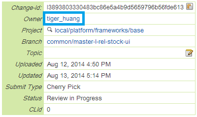
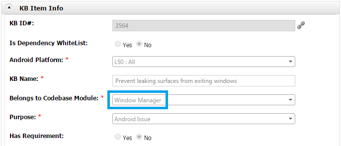
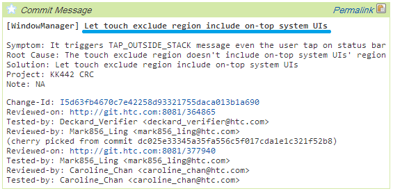

Overview
Patch Finder finds the patches from the source code. It generates reports for us to maintain our patches.
Format
The patches which have the following format can be found by Patch Finder.
//++[Category][Author][Date][Module] Title //$ Subject (optional) //: Description (line 1) (optional) //: Description (line 2) (optional) (Your code here) //--[Category][Author][Date][Module] Title
Category
One of the following:- Debug
- Issue Fix
- Feature
- Customization
- Optimization
- Tool
Author
It should be the login name of the Gerrit. It should be the same as the patch owner on the Gerrit.
Date
It should have the format "YYYY/mm/dd". It is the date you upload the patch.Module
It should be the same name of the Codebase Module in HPKB. Case sensitive.
Title
It should be included in the first line of commit message of Git. For example://++[Issue Fix][tiger_huang][2014/04/23][Window Manager] Let touch exclude region include on-top system UIs (code) //--[Issue Fix][tiger_huang][2014/04/23][Window Manager] Let touch exclude region include on-top system UIs
Subject (optional)
If there are multiple patches map to the same subject, then these patches should specify this field, and use the same Subject. One patch can be owned by multiple Subjects (separated by ','). For example://++[Feature][tiger_huang][2014/07/14][Window Manager] Enable other system services to setAppVisibility silently //$ Share screen //: In this way, the server won't dispatch visibility to client. This is for share screen feature. (Code) //--[Feature][tiger_huang][2014/07/14][Window Manager] Enable other system services to setAppVisibility silently
//++[Feature][johnny_ku][2014/08/01][Input] Modify some code for share screen and glove mode //$ Share screen, Glove Mode (Code) //--[Feature][johnny_ku][2014/08/01][Input] Modify some code for share screen and glove mode
Description (optional)
It should be direct under the opening-patch line or under the subject. It can be multiple lines. For example://++[Feature][tiger_huang][2014/07/14][Window Manager] Enable other system services to setAppVisibility silently //$ Share screen //: In this way, the server won't dispatch visibility to client. This is for share screen feature. (Code) //--[Feature][tiger_huang][2014/07/14][Window Manager] Enable other system services to setAppVisibility silently
//++[Feature][johnny_ku][2014/08/01][Input] Modify some code for share screen //: Some description //: The second line of description (Code) //: Not the description (because there is a broken line.) (Code) //--[Feature][johnny_ku][2014/08/01][Input] Modify some code for share screen
Rules
Reduce Redundant
Subject and Description only need to be written once. For example:
//++[Debug][tiger_huang][2014/03/06][Window Manager] Add surface log
//$ Add log for debug
//: Add log for us to monitor surface operation
if (WindowManagerService.DEBUG_HTC) {
WindowManagerService.logSurface(mWin, "HIDE", null);
}
//--[Debug][tiger_huang][2014/03/06][Window Manager] Add surface log
//++[Debug][tiger_huang][2014/03/06][Window Manager] Add surface log
if (WindowManagerService.DEBUG_HTC) {
WindowManagerService.logSurface(mWin, "CREATE pid="
+ mSession.mPid + " format=" + attrs.format + " layer="
+ mAnimLayer, null);
}
//--[Debug][tiger_huang][2014/03/06][Window Manager] Add surface log
Nested Patches
This is allowed://++[a][b][c][d] e //++[a][b][c][d] e2 //--[a][b][c][d] e2 //--[a][b][c][d] eThis is not allowed (the inner comment of the patch should be removed):
//++[a][b][c][d] e //++[a][b][c][d] e //--[a][b][c][d] e //--[a][b][c][d] e
Tailing "-->"
Tailing "-->" will be removed.Another Way to Close a Patch
//~~[Category][Author][Date][Module] TitleThis is for the reason that the XML document does not allow "--" existing in the comment.
Other Languages
Android.mk
For example:
#//++[Debug][chilun_huang][2014/05/05][HWUI] Add a property to runtime adjust the cache flush mechanism
#//: Add userdebug flag to detect the ROM type
ifeq ($(HTC_DEBUG_FLAG),DEBUG)
LOCAL_CFLAGS += -DHTC_DEBUG_FLAG
endif
#//--[Debug][chilun_huang][2014/05/05][HWUI] Add a property to runtime adjust the cache flush mechanism
XML
For example:<!-- //++[Debug][tiger_huang][2014/03/06][Window Manager] For XML example --> <string name="hello_world">Hello world!</string> <!-- //~~[Debug][tiger_huang][2014/03/06][Window Manager] For XML example -->